元体育の日ってことで、体を動かしに鳶ガ巣城址に行きました。
2021/10/10
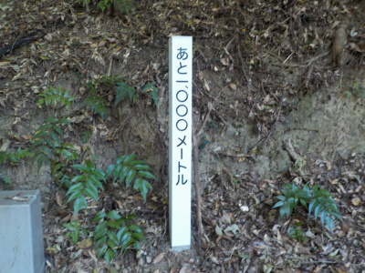
道のりは1000メートルで短いですが、登りが続くので辛かったです。
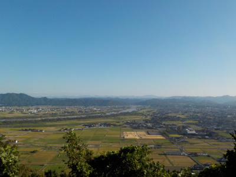
5合目付近からの景色です。今日はとってもいい天気で暑かった。
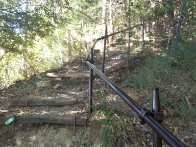
新しそうな手すりがありました。整備されてていいですね。
倒木もないし雑草も少なく、手をついて進む場所もありませんでした。
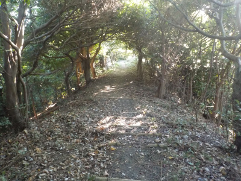
木が茂っている場所が多いので、日当たりが悪くて雑掌が生えないのかな。
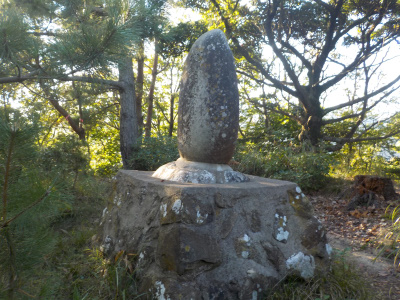
山頂の石碑です。
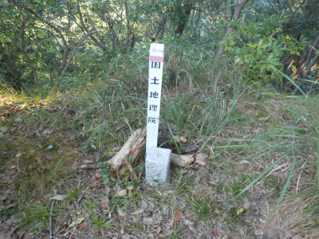
本当の山頂はこっちみたい。
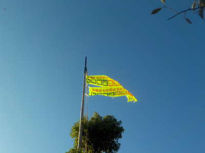
山の下からも見えましたが、旗がなびいていました。
飲酒運転撲滅って書いてありました。ここで飲むな。飲んだら乗るなってことでしょうか？
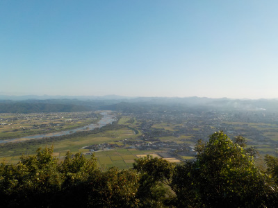
展望台からの眺めです。晴れの日は綺麗でいいですね。
こうゆうの見ると登って良かったって思います。
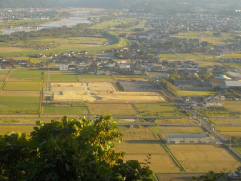
たぶんこの土が出ているのが、新しく出雲市体育館が出来る場所かな。
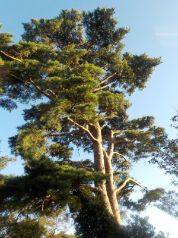
今日はこの赤松の松ぼっくりと、アケビの種、丸いどんぐりを拾って帰りました。
春になったら蒔いて育てようと思っています。
鳶ヶ巣城址
2017/05/05
山歩きをやってみようと思いました。
始めから遠くの長距離は無理なので、近くの短距離からスタートです。
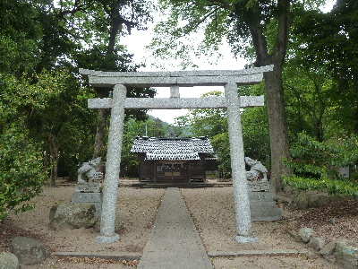
鳶ヶ巣城址のふもとにある伊努神社です。
近くなので寄ってみました。
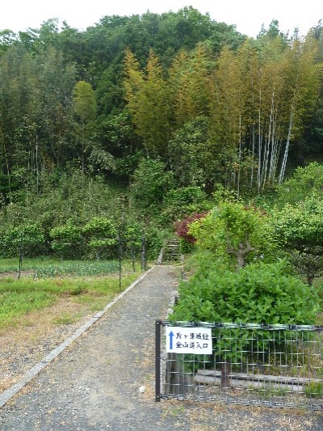
ここが登り口です。
登り口の地図です。真ん中の空き地が駐車場です。
広いですね。
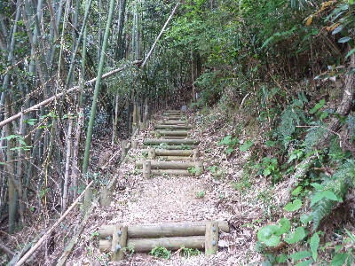
登り始めから階段です。階段が延々と続きました。
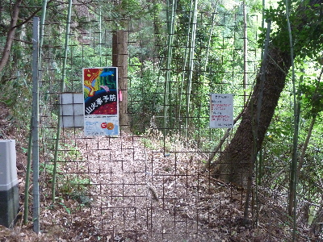
鹿の柵です。
ここを開けて、山の奥に入ります。
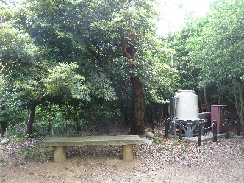
ベンチで休憩です。
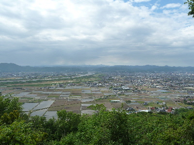
登っている途中ですが、綺麗な景色が見れました。
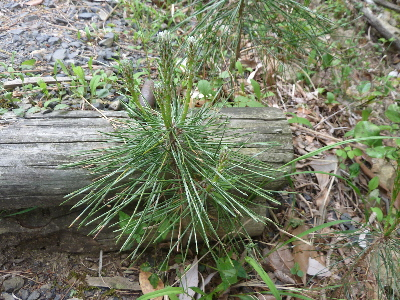
途中、松の木の小さいのが沢山生えていました。
松くい虫で枯れてしまったと思っていたんですが、新しい松が次々生まれてるんですね。
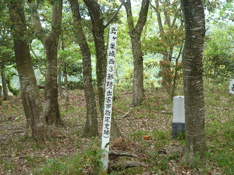
ここでも休憩です。（鳶ヶ巣城址 西3郭）
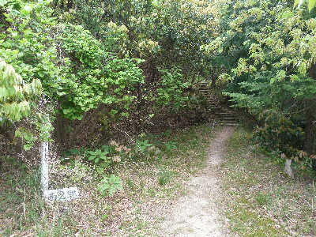
もうすぐ山頂です。（鳶ヶ巣城址 西2郭）
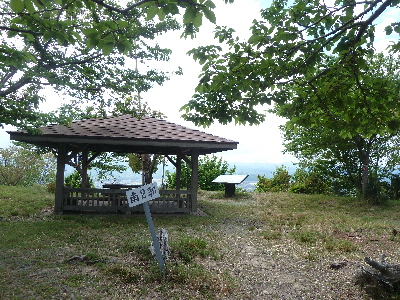
開けた場所には展望台や屋根付の休憩所がありました。（鳶ヶ巣城址 南2郭）
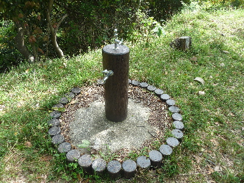
水道が完備されていました。整備されていますね。
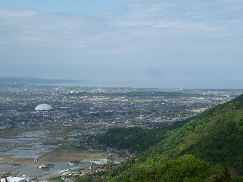
展望台から海が見えました。山から海を見るのって気持ちいです。
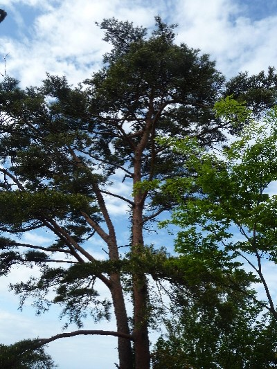
大きい松の木です。枯れずに生き残って欲しいです。
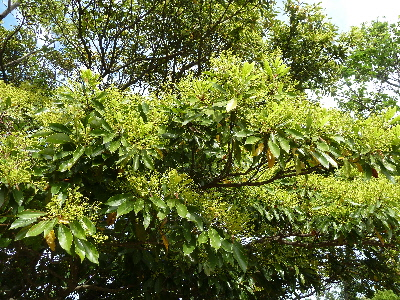
山の木は花が咲いていて、沢山のクマンバチが飛んでいました。
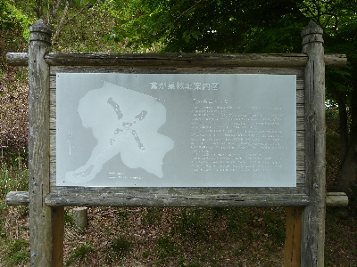
鳶ヶ巣城址の案内図です。
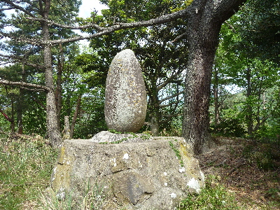
鳶ヶ巣城址の山頂です。ここは案外狭いです。
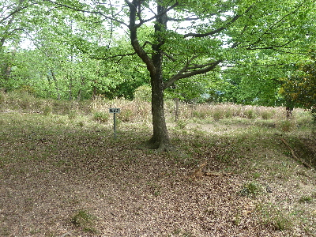
城址の周りをぐるっと周りました。（鳶ヶ巣城址 東2郭）
いままでとちょっと景色が変わりました。
日陰が多くなりました。
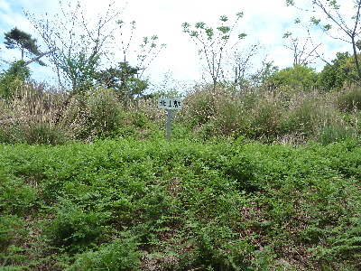
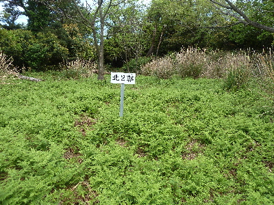
こっちはぜんまいが広がっていました。（鳶ヶ巣城址 北1郭と北2郭）
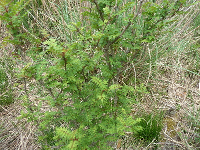
サンショウの木を見つけました。
葉っぱから爽やかないい香りがしました。
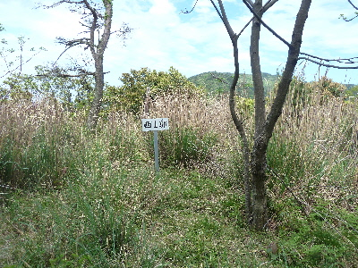
ここは草が茂ってますね。（鳶ヶ巣城址 西1郭）
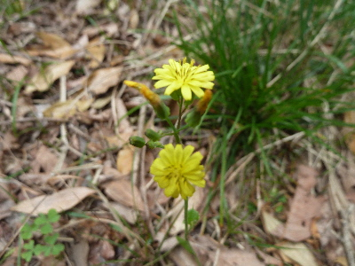
なんて花か分かりませんが、小さい花がぽつんと咲いていました。
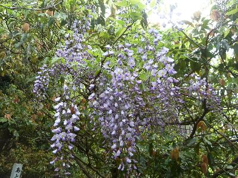
藤の花も咲いていました。
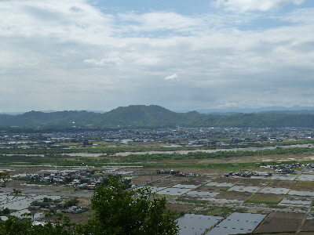
帰りにまた登りの時に眺めが良かった場所で景色を見ました。
次はどこの山に行こうかな。
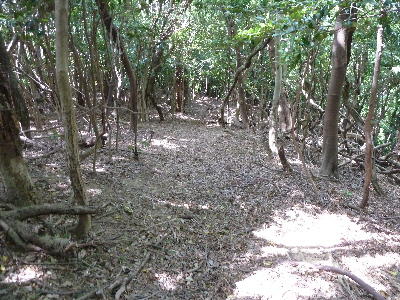
霊雲寺に向かって降りて行きます。
こっち道は階段じゃなくで、普通に坂道です。枯葉が多く滑りやすそうですね。
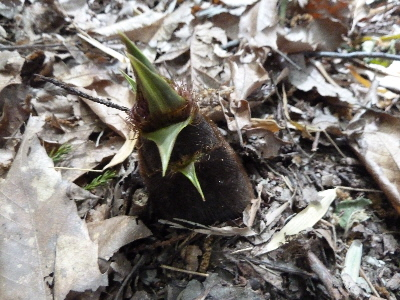
道にタケノコが生えてました。小さいので美味しいかも。
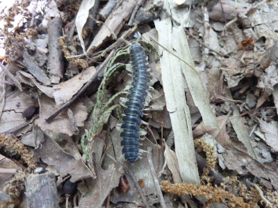
ムカデもいました。
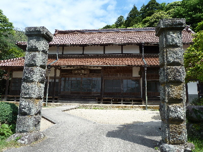
山を出たら霊雲寺です。
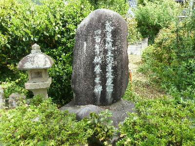
霊雲寺には鳶ヶ巣城の城主の供養の碑がありました。
鳶ヶ巣城址とセットで歩くといいかもです。
登り口から霊雲寺までで1時間45分かかりました。
途中鹿と遭遇したんですが、もの凄い勢いで逃げて行きました。もっと見たかったなー。
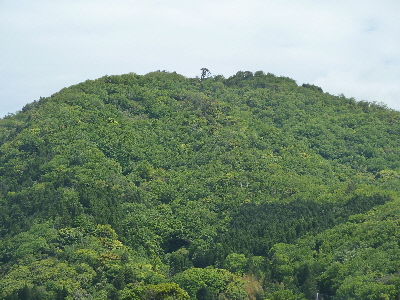
今日はこの山に登りました。